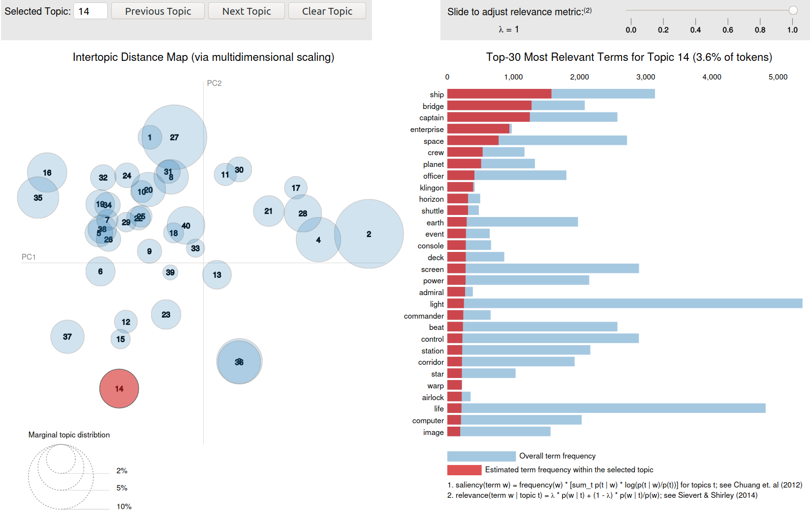

<!doctype html>
<html lang="en">
<head>
<meta charset="utf-8">
<!-- CUSTOMIZE THIS! -->
<title>Scholarly Writing and Publishing Today</title>
<meta name="author" content="Christof Schöch">
<!-- END -->
<meta name="description" content="Slides">
<meta name="apple-mobile-web-app-capable" content="yes">
<meta name="apple-mobile-web-app-status-bar-style" content="black-translucent">
<meta name="viewport" content="width=device-width, initial-scale=1.0, maximum-scale=1.0, user-scalable=no, minimal-ui">
<link rel="stylesheet" href="css/reveal.css">
<link rel="stylesheet" href="css/theme/simple.css" id="theme">
<!-- Code syntax highlighting -->
<link rel="stylesheet" href="lib/css/zenburn.css">
<!-- Printing and PDF exports -->
<script>
var link = document.createElement( 'link' );
link.rel = 'stylesheet';
link.type = 'text/css';
link.href = window.location.search.match( /print-pdf/gi ) ? 'css/print/pdf.css' : 'css/print/paper.css';
document.getElementsByTagName( 'head' )[0].appendChild( link );
</script>
<!--[if lt IE 9]>
<script src="lib/js/html5shiv.js"></script>
<![endif]-->
</head>

<body>
<div class="reveal">
<div class="slides">
<section data-markdown="" data-separator="^\n-\n" data-separator-vertical="^\n--\n" data-charset="utf-8" data-background-image="img/basics/uni-trier-icon.png" data-background-size="50px" data-background-position="top 10px right 10px">
<script type="text/template">

<!-- THIS IS WHERE THE CONTENT GOES! -->
<!-- Any section element inside of this container is displayed as a slide -->

##Scholarly Publishing Beyond the PDF, or:<br/>Publication of Data, with Data, as Data
<hr/>
<br/>
Christof Schöch (Trier)
<br/>
<br/>***Scholarly Writing and Publishing Today***
<br/>**January 31, 2020, Trier**
<br/>
<br/>Slides: https://christofs.github.io/publ/#/
<br/>
<br/>
<hr/>
</img>&nbsp;&nbsp;&nbsp;</img>


-
# Introduction

--
## Overview
1. [Introduction](#/1)
1. [Open Access and Beyond](#/2)
1. [Publication of Data](#/3)
1. [Publications with Data](#/4)
2. [Publications as Data](#/5)
3. [Conclusion](#/6)

--
## Goals of this talk
* Introduce you to Open Science beyond Open Access <!-- .element: class="fragment" data-fragment-index="1" --> 
* Illustrate why the PDF is a dead-end street for publishing <!-- .element: class="fragment" data-fragment-index="2" --> 
* Show various ways in which we can go beyond the PDF <!-- .element: class="fragment" data-fragment-index="3" --> 

-
# Open Access and Beyond

--
## Open Access is important! 
>An old tradition and a new technology have converged to make possible an unprecedented public good. The old tradition is the willingness of scientists and scholars to publish the fruits of their research in scholarly journals without payment, for the sake of inquiry and knowledge. The new technology is the internet. The public good they make possible is the world-wide electronic distribution of the peer-reviewed journal literature and completely free and unrestricted access to it by all scientists, scholars, teachers, students, and other curious minds. Removing access barriers to this literature will accelerate research, enrich education, share the learning of the rich with the poor and the poor with the rich, make this literature as useful as it can be, and lay the foundation for uniting humanity in a common intellectual conversation and quest for knowledge. 

<small>
(Budapest Declaration on Open Access, 2002, <br/>https://www.budapestopenaccessinitiative.org/read)
</small>

--
## Open Science: Areas

<small>
Image source: Rachael Gallager et al., 2019, URL: https://ecoevorxiv.org/kac45/, Licence: [CC BY-SA](https://creativecommons.org/licenses/by-sa/3.0/)
</small>

--
## Open Science: Guidelines
* Creative Commons Licences
* FAIR Principles

--
## Creative Commons Licences

<small>More information: https://creativecommons.org/</small>

--
## FAIR Data Principles

* Findable: (rich) metadata; referenced in catalogues <!-- .element: class="fragment" data-fragment-index="1" --> 
* Accessible: no technical or legal barriers; easy to retrieve <!-- .element: class="fragment" data-fragment-index="2" --> 
* Interoperable: using standard formats; widely-used vocabularies <!-- .element: class="fragment" data-fragment-index="3" --> 
* Reusable: useful and understandable data and metadata <!-- .element: class="fragment" data-fragment-index="4" --> 

<br/><small>Details: https://www.forschungsdaten.org/index.php/FAIR_data_principles</small>


-
# 2. Publication of Data

--
## Why publish data?
* Sharing carefully-curated datasets is good practice <!-- .element: class="fragment" data-fragment-index="1" --> 
* It enables open science <!-- .element: class="fragment" data-fragment-index="2" --> 
    * transparency
    * reproducibility
    * re-use 

--
## How to publish data?
* Follow FAIR principles:<br/>findable, accessible, interoperable, re-usable <!-- .element: class="fragment" data-fragment-index="1" --> 
* In particular:<br/>data and metadata quality; persistent identifiers <!-- .element: class="fragment" data-fragment-index="2" --> 
* Use one of the larger platforms:<br/>Zenodo, Figshare, DataDryad <!-- .element: class="fragment" data-fragment-index="3" --> 
* Relevant academic subfield:<br/>Data Curation, Research Data Management <!-- .element: class="fragment" data-fragment-index="4" --> 

--
## Platforms

<br/>https://figshare.com


<br/>https://zenodo.org


<br/>https://datadryad.org/

--
## Finding Datasets
* Search directly on Zenodo, Figshare or DataDryad (or Github) <!-- .element: class="fragment" data-fragment-index="1" --> 
* Use dedicated search engines <!-- .element: class="fragment" data-fragment-index="2" --> 
    * BASE: https://de.base-search.net/
    * Google Dataset search: https://datasetsearch.research.google.com/
* Use more specific data sources <!-- .element: class="fragment" data-fragment-index="3" --> 
    * Five-Thirty-Eight: https://data.fivethirtyeight.com/
    * ProPublica: https://www.propublica.org/datastore/datasets
    * UN Data: https://data.un.org/
    * Berlin Open Data: https://daten.berlin.de/
    * many more, depending on your field

--
## Examples
* Google Ngrams Dataset:<br/>[Google Download](http://storage.googleapis.com/books/ngrams/books/datasetsv2.html)
* Stylometry Bibliography:<br/>[Zotero](https://www.zotero.org/groups/643516/stylometry_bibliography/library) (consult) and [Zenodo](https://doi.org/10.5281/zenodo.591819) (analyse)
* Comic Unconference Twitter Archive:<br/>[Figshare](https://figshare.com/articles/A_comicsuncon15_Twitter_Archive/1321222) and [Visualization](https://hawksey.info/tagsexplorer/arc.html?key=t5MaOUBX50GJhwLlf2VidEQ)


-
# 3. Publications & Data<br/> (& Code)

--
## Three types
* Definition: Publishing prose and relevant data together <!-- .element: class="fragment" data-fragment-index="1" --> 
* Three constellations <!-- .element: class="fragment" data-fragment-index="2" --> 
    * Paper with accompanying dataset = supplementary data (two separate entities) <!-- .element: class="fragment" data-fragment-index="3" --> 
    * Dataset with accompanying paper = data paper (two separate entities) <!-- .element: class="fragment" data-fragment-index="4" --> 
    * Paper with integrated data, analyses and visualisations = enriched publication (one single output) <!-- .element: class="fragment" data-fragment-index="5" --> 

--
## Why publish papers and data?
* Supplementary data: Allow people to check your data and code (transparency, reproducibility) <!-- .element: class="fragment" data-fragment-index="1" --> 
* Dataset paper: Allow people to understand your dataset and cite a paper instead of a dataset <!-- .element: class="fragment" data-fragment-index="2" --> 
* Enriched publication: Allow people to directly see how your data supports your paper <!-- .element: class="fragment" data-fragment-index="3" --> 

--
## Paper with data supplement (1)
<a href="https://heidata.uni-heidelberg.de/dataset.xhtml?persistentId=doi:10.11588/data/10071"></a>
<small>Example: Matthew Lincoln, "Social Network Centralization Dynamics in Print Production in the Low Countries, 1550-1750", International Journal for Digital Art History, 2016, https://doi.org/10.11588/dah.2016.2.25337</small>

--
## Paper with data supplement (2)
<a href="img/lincoln-code.png"></a>

--
## Dataset paper

<br/>The CLiGS textbox: paper at [jTEI](https://journals.openedition.org/jtei/2085) and dataset on [Github](https://github.com/cligs/textbox/tree/v.4.0.0) and [Zenodo](https://zenodo.org/record/1254483)

--
## Does anyone publish dataset papers?
It depends... <!-- .element: class="fragment" data-fragment-index="1" --> 
<br/> <!-- .element: class="fragment" data-fragment-index="1" --> 
<br/><small>See: https://www.gbif.org/data-papers</small> <!-- .element: class="fragment" data-fragment-index="1" --> 

--
## Papers integrating data/code
<a href="img/rmarkdown-example.png"></a>
<br/>Connecting text, data and code in RMarkdown 
<small>Source: [https://github.com/ecoinfAEET/Reproducibilidad/](https://raw.githubusercontent.com/ecoinfAEET/Reproducibilidad/master/figuras/Figuras_definitivas/Figs_PNG/Fig3.png)</small>

--
## Interactive data visualizations
<a href="data/visualization.html"></a>
<small>Source: Topic model of 1600 movie scripts (unpublished)</small>

--
## Interactive papers
<a href="https://medium.com/plotly/researchers-can-now-publish-interactive-plotly-figures-in-f1000-87827a1b5d94"></a>
<small>Source: Thomas Ingraham, "Researchers can now publish interactive Plotly figures in F1000", *Medium.com*, 2017, [URL](https://medium.com/plotly/researchers-can-now-publish-interactive-plotly-figures-in-f1000-87827a1b5d94).</small>

--
## Also: Educational Resources
Jupyter Notebooks and Google Colab
<br/>
<small>See: https://allendowney.github.io/ElementsOfDataScience/</small>


-
# 4. Publications as Data

--
## Are Publications Data?
* Bibliography as data: machine-readable form <!-- .element: class="fragment" data-fragment-index="1" --> 
* Marked-up structure: people can find introduction, method, conclusion sections automatically <!-- .element: class="fragment" data-fragment-index="2" --> 
* Marked-up entities: people can find out precisely what you are talking about <!-- .element: class="fragment" data-fragment-index="3" --> 
* Machine-readable statements: people can find out what your key points are <!-- .element: class="fragment" data-fragment-index="4" --> 

--
## Bibliographies as Data
* use machine-readable formats:<br/>BibTex, BibJSON <!-- .element: class="fragment" data-fragment-index="1" --> 
* include persistent identifiers:<br/>DOIs <!-- .element: class="fragment" data-fragment-index="2" --> 
* use tools that produce such formats:<br/>Zotero, Citavi, etc. <!-- .element: class="fragment" data-fragment-index="3" --> 
* publish the BibTex along with your paper<br/>(supplement) <!-- .element: class="fragment" data-fragment-index="4" --> 

--
## The BibTex format
Benureau, Fabien C. Y., and Nicolas P. Rougier. "Re-Run, Repeat, Reproduce, Reuse, Replicate: Transforming Code into Scientific Contributions." *Frontiers in Neuroinformatics* 11 (January 4, 2018). DOI: https://doi.org/10.3389/fninf.2017.00069.
<br/><br/>
<a href="data/bibtex.bib"></a>

--
## Marked-up structure
* Macrostructure <!-- .element: class="fragment" data-fragment-index="1" --> 
    * Metadata
    * main text
    * bibliography
* Microstructure <!-- .element: class="fragment" data-fragment-index="2" --> 
    * abstract
    * introduction
    * analysis
    * conclusions
    * etc.

--
## Journal article in XML-TEI
Alternative: JATS
<br/><a href="data/jtei-oc-ds-schoch-144-source.xml"></a>

--
## Marked-up Named Entities
* Types of entities <!-- .element: class="fragment" data-fragment-index="1" --> 
    * person names (writers, historical figures, etc.)
    * place names (cities, streets, countries)
    * organizations (publishers, companies)
    * research objects (novels, paintings, proteins, etc.)
* Persistent identifiers <!-- .element: class="fragment" data-fragment-index="2" --> 
    * VIAF, Wikidata, Getty TGN, etc.
    * More data: biographical data; geolocation; 

--
## Place names in an article
<a href="https://recogito.pelagios.org/document/kqhzjlljz7tsuc/map"></a>
<small>Source: A Sautkin, E Philippova, "Modernization reflected creatively: <br/>Central European capitals in the mirror of horror movies", *Creativity Studies*, 2018, [URL](https://journals.vgtu.lt/index.php/CS/article/download/5519/4787).</small>

--
## Linked Open Data
* Machine-readable information about the article <!-- .element: class="fragment" data-fragment-index="1" --> 
* Embedded into the article itself <!-- .element: class="fragment" data-fragment-index="2" --> 
* Based on metadata <!-- .element: class="fragment" data-fragment-index="3" --> 
    * publication date, publisher, etc.
    * places, people 
* Based on entities and semantic content <!-- .element: class="fragment" data-fragment-index="4" --> 
    * topics
    * key statements

--
## Linked Open Data


```
ISBN:9780141985411 HAS_TITLE "Weapons of Math Destruction"

ISBN:9780141985411 HAS_PUBLICATION_YEAR "2016"

ISBN:9780141985411 HAS_SUBJECT "Big Data"

ISBN:9780141985411 HAS_THESIS {"Big Data" CREATES "Inequality"}

ISBN:9780141985411 HAS_THESIS {"Big Data" ENDANGERS "Democracy"}
```

--
## Example Query in Wikidata
Written works with main subject Computer Science
<br/><a href="https://query.wikidata.org/#select%20%3Fauthor%20%3Fwork%20%3FauthorLabel%20%3FworkLabel%20%20where%20%7B%0A%20%20%3Fwork%20wdt%3AP31%20wd%3AQ47461344%3B%0A%20%20wdt%3AP921%20wd%3AQ21198%3B%0A%20%20wdt%3AP50%20%3Fauthor.%0A%20%20SERVICE%20wikibase%3Alabel%20%7B%20bd%3AserviceParam%20wikibase%3Alanguage%20%22en%22.%20%7D%0A%7D%0Alimit%2050"></a>

--
## What does all of this enable?
* Investigations into the state of the art in a field <!-- .element: class="fragment" data-fragment-index="1" --> 
* Analysis of citation networks  <!-- .element: class="fragment" data-fragment-index="2" --> 
* intelligent search over large collections of papers <!-- .element: class="fragment" data-fragment-index="3" --> 
* Visualizations like maps, timelines, etc. <!-- .element: class="fragment" data-fragment-index="4" --> 
* many more analyses... <!-- .element: class="fragment" data-fragment-index="5" --> 


-
# Conclusions

--
## Take-away points
* There is a lot more to Open Access than cost-free reading <!-- .element: class="fragment" data-fragment-index="1" --> 
* There is a lot more to publications than static PDF <!-- .element: class="fragment" data-fragment-index="2" --> 
* Most of the added features are not possible in print or PDF <!-- .element: class="fragment" data-fragment-index="3" --> 
* The technology is out there, but using it is still challenging <!-- .element: class="fragment" data-fragment-index="4" --> 
* Publishing text, data and code in open, standardized formats is the first step <!-- .element: class="fragment" data-fragment-index="5" --> 

--

<small>Source: Howard Miller, https://commons.wikimedia.org/wiki/File:We_Can_Do_It!.jpg (public domain)

-
# Thank you!
<br/>
<br/>
<br/>
<br/>
<br/>
<br/>
<hr/>
<p>Christof Schöch, 2020</p>
<p><a href="https://dh.uni-trier.de/">dh.uni-trier.de</a></p>
<p><a href="https://creativecommons.org/licenses/by/4.0/">CC-BY 4.0</a><br/></p>
<hr/>
<br/>
<br/>
</script>
</section>


<!-- DON'T TOUCH UNLESS YOU KNOW WHAT YOU'RE DOING :-) -->
</div>
<script src="lib/js/head.min.js"></script>
<script src="js/reveal.js"></script>
<script>
// Full list of configuration options available at:
// https://github.com/hakimel/reveal.js#configuration
Reveal.initialize({
    controls: true,
    progress: true,
    history: true,
    center: true,
    transition: 'slide', // none/fade/slide/convex/concave/zoom
    // Optional reveal.js plugins
    dependencies: [
        { src: 'lib/js/classList.js', condition: function() { return !document.body.classList; } },
        { src: 'plugin/markdown/marked.js', condition: function() { return !!document.querySelector( '[data-markdown]' ); } },
        { src: 'plugin/markdown/markdown.js', condition: function() { return !!document.querySelector( '[data-markdown]' ); } },
        { src: 'plugin/highlight/highlight.js', async: true, callback: function() { hljs.initHighlightingOnLoad(); } },
        { src: 'plugin/zoom-js/zoom.js', async: true },
        { src: 'plugin/notes/notes.js', async: true }
        ]
    });
</script>
</body>
</html>
